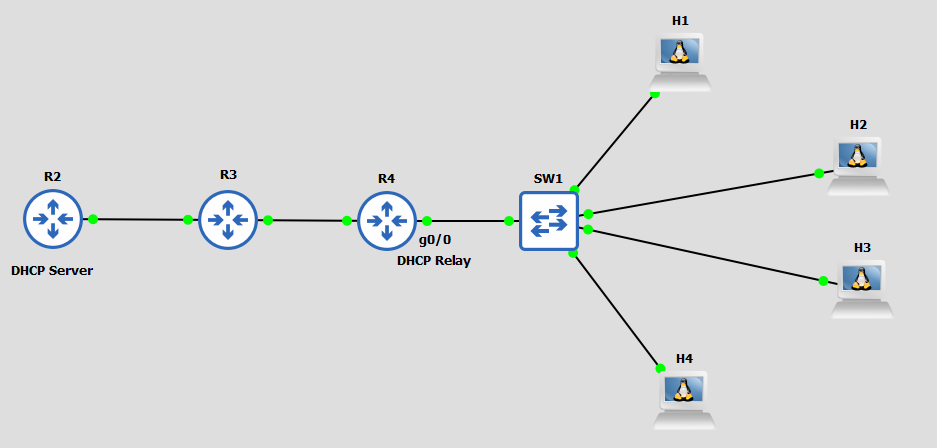

A
B
C
D
Téměř každé zařízení v dnešním světě potřebuje přístup k Internetu. K tomu potřebuje mít nastavenou IP adresu a adresu brány, což ale ne každý umí nastavit. Proto se vyvinul DHCP protokol.
DHCP je protokol, který zařízení dynamicky nastaví síťové údaje (IP adresu, subnet mask, gateway atd.).
Konfiguraci DHCP si ukážeme na následujícím příkladu:
Udělej na R2 DHCP server s následujicími parametry:
Z R4 udělej na interfacu g0/0 DHCP Relay server odkazující na R2 loopback adresu 1.1.1.1.
Nejdřív tedy vytvoříme na R2 DHCP POOL jménem NET1:
R2(config)#ip dhcp pool NET1
Vytvořením POOLu se automaticky přepneme do dhcp konfigurace, kde nastavíme potřebné údaje:
R2(dhcp-config)#network 192.168.2.0 255.255.255.0 R2(dhcp-config)#default-router 192.168.0.1 R2(dhcp-config)#dns-server 8.8.8.8 R2(dhcp-config)#lease 12
Nakonec ještě na R2 nastavíme to, že adresy 192.168.2.1 a 192.168.2.254 nebudou součástí našeho DHCP POOLu.
R2(config)#ip dhcp excluded-address 192.168.2.1 R2(config)#ip dhcp excluded-address 192.168.2.254
Nyní se přesuneme na R4, kde z g0/0 uděláme DHCP RELAY odkazující na R2 loopback adresu 1.1.1.1
R4(config-if)#ip helper-address 1.1.1.1
Nyní by všichni hosti měli dostat potřebnou síťovou konfiguraci. To koneckonců můžeme i zkontrolovat pomocí příkazu:
R2#show ip dhcp binding
Ten nám ukazuje získanou IP adresu na zařízení s danou MAC adresou a dokonce tam i vidíme, kdy vyprší "pronájem" údajů.
| Příkazy | Popis | Mód |
|---|---|---|
| vlan {vlan-id} | Vytvoří VLAN a přepne do VLAN interfacu | Global Config |
| name {vlan-name} | Pojmenuje VLAN | VLAN interface |
| switchport mode {access | trunk | dynamic desirable | dynamic auto} | Přepne interface do modu | Interface |
| switchport nonegotiate | Vypne DTP na interfacu | Interface |
| switchport access vlan {vlan-id} | Přiřadí VLANu k danému interfacu | Interface |
| switchport trunk encapsulation {protocol} | Nastaví trunking protokol na switchi | Global Config |
| switchport trunk native vlan {vlan-id} | Nastaví Native VLAN | Interface |
| switchport trunk allowed vlan {add | all | except | remove} {vlan-id} | Nastaví povolené VLANy na trunku | Interface |
| encapsulation dot1q {VLAN_ID} | Nastaví sub interface pro danou VLAN | router - sub interface |
| vtp mode {transparent | off} | Vypne VTP | Global Config |
| show interfaces switchport | Zobrazí informace o interfaci | EXEC |
| show interfaces {interface-id} trunk | Zobrazí informace o truncích | EXEC |
| show vlan brief | Zobrazí informace o VLAN | EXEC |
| show vtp status | Zobrazí informace o VTP | EXEC |
A
B
C
D